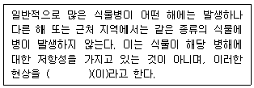
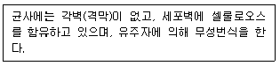
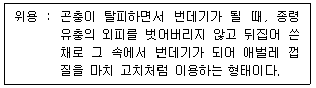

식물보호산업기사 (2015-09-19 기출문제)
1과목: 식물병리학
1. 벚나무 빗자루병의 방제법으로 가장 적당한 것은?
- 여름철에 살균제를 뿌려준다.
- 옥시테트라싸이클린계 항생제를 나무에 주사한다.
- 매개충을 구제하기 위해 살충제를 지면에 뿌려준다.
- 병든 가지는 아래쪽의 부풀은 부분을 포함하여 겨울철에 잘라낸다.
(정답률: 56%)

2. TMV에 의해 발병하며 주로 토양에 의하여 전염되는 병은?
- 고추 모자이크병
- 마늘 모자이크병
- 배추 모자이크병
- 오이 모자이크병
(정답률: 74%)
3. Pseudomonas 세균의 특성으로 옳은 것은?
- 그램음성의 간균으로 대부분 호기성균이다.
- 그램음성의 간균으로 대부분 혐기성균이다.
- 그램양성의 간균으로 대부분 호기성균이다.
- 그램양성의 간균으로 대부분 혐기성균이다.
(정답률: 67%)
4. 식물병 방제를 위하여 Millardet가 개발한 것으로 당시 유행한 포도 노균병을 방제하기 위해 구리가 가진 독성을 이용한 것으로 현재에도 많이 사용되는 살균제는?
- BT제
- PCNB
- 유황합제
- 보르도액
(정답률: 89%)
5. 벼 이삭누룩병균은 분류학상 어느 균류에 속하는가?
- 난 균
- 담자균
- 자낭균
- 불완전균
(정답률: 58%)
6. 벼 잎집무늬마름병에 대한 설명으로 옳지 않은 것은?
- 고온·다습한 환경에서 잘 발병한다.
- 밀식하여 재배할 경우 잘 발병한다.
- 칼륨 비료 시비량을 줄여 방제할 수 있다.
- 병원균은 논이나 토양에서 월동하며, 봄철에 벼 잎집에 부착된 균사가 별르 침해한다.
(정답률: 84%)
7. 오이 덩굴쪼김병의 설명으로 옳은 것은?
- 산성 토양에서는 잘 발생하지 않는다.
- 연작하는 포장에서 피해가 큰 병이다.
- 주로 18℃ 이하의 온도에서 잘 발생한다.
- 종자전염보다는 주로 매개층에 의해 전염된다.
(정답률: 68%)
8. 고구마 무름병의 특징적인 표징은?
- 균핵
- 포자낭
- 자낭각
- 포자퇴
(정답률: 52%)
9. 호박에 흰가루병을 방제하기 위해 어느 부위에 약제 처리하는 것이 가장 효과적인가?
- 잎
- 뿌리
- 열매
- 종자
(정답률: 84%)
10. 병원균으 한 종이나 한 분화형 또는 변종 중에서 기주의 품종에 대한 기생성을 의미하는 용어는?
- 아종
- 레이스
- 병원형
- 판별품종
(정답률: 73%)
11. 무사마귀병에 대한 설명으로 옳은 것은?
- 벼에도 잘 발생한다.
- 세균에 의해 발생한다.
- 산성토양에서 잘 발생한다.
- 온도가 20℃ 이하로 서늘 할 때 잘 발생한다.
(정답률: 88%)
12. 식물 중에 특정 병원체 침입에 대하여 민감하게 반응하거나 특징적인 병징을 이용한 것으로 주로 바이러스의 진단에 널리 쓰이며 세균이나 일부 균류에 의한 병의 진단에도 활용하는 방법은?
- 파지에 의한 병의 진단
- 지표식물에 의한 병의 진단
- 즙액 접종에 의한 병의 진단
- 괴경지표법에 의한 병의 진단
(정답률: 71%)
13. 병원균에 대한 기주 저항성 중 품종고유의 소수 주동유전자에 의해 발현되기 때문에 재배환경에 영향을 적게 받으나 레이스의 변이에 의하여 감수성으로 되기 쉬운 것은?
- 수평 저항성
- 침입 저항성
- 수직 저항성
- 감염 저항성
(정답률: 76%)
14. 다음 괄호 안에 해당하는 용어는?

- 변이
- 병회피
- 병면역
- 감수성
(정답률: 75%)
15. 다음 중 윤작을 이용한 방제효과가 가장 높은 것은?
- 균핵병
- 흰가루병
- 풋마름병
- 무사마귀병
(정답률: 56%)
16. 벼 도열병의 전형적인 병징은?
- 모무늬
- 얼룩무늬
- 겹둥근모양
- 실꾸리모양
(정답률: 72%)
17. 균류에 속하는 다음 설명에 해당하는 것은?

- 난균문
- 끈적균문
- 자낭균문
- 담자균문
(정답률: 67%)
18. 논에서 벼 도열병균 분생포자의 주된 전염방법은?
- 물
- 토양
- 바람
- 곤충
(정답률: 71%)
19. Nepovirus를 매개하여 식물병을 감염시키는 것은?
- 선충
- 멸구
- 매미충
- 진딧물
(정답률: 66%)
20. 감자 Y바이러스의 특징이 아닌 것은?
- 진딧물에 의해 매개된다.
- 풍차형 봉입체를 형성한다.
- 감염된 식물의 세포질 내에 흩어져 존재한다.
- 최근에는 조직배양에 의한 씨감자 생산보급이 확대되어 발병이 많이 감소하였다.
(정답률: 65%)
2과목: 농림해충학
21. 중배엽으로부터 유래된 기관은?
- 중장
- 심장
- 전장
- 신경
(정답률: 76%)
22. 가루깍지벌레의 연 발생횟수는?
- 1년에 1회 발생
- 1년에 3회 발생
- 1년에 5회 발생
- 2년에 1회 발생
(정답률: 62%)
23. 곤충의 서식지에 따른 곤충 분류가 아닌 것은?
- 공중에 사는 종류
- 물 위에 사는 종류
- 땅속에 서식하는 종류
- 식물체 내외에 사는 종류
(정답률: 79%)
24. 고구마나 당근 등에 주로 발생하는 뿌리혹선충의 방제방법으로 옳지 않은 것은?
- 상토를 소독한다.
- 토양의 pH가 높아지지 않도록 관리를 한다.
- 경작지가 논일 경우 3년마다 한 번씩 벼를 재배한다.
- 토양의 유기물 함량이 낮아지지 않도록 비배관리를 한다.
(정답률: 70%)
25. 뒷날개가 평균기(Halter)로 변형되어 비행 중 몸의 균형을 유지하는 곤충은?
- 쉬파리
- 벼메뚜기
- 호랑나비
- 솔수염하늘소
(정답률: 77%)
26. 곤충의 생활사에서 용화란 무엇인가?
- 유충이 번데기가 되는 것
- 알껍질을 깨고 배자가 나오는 것
- 번데기가 탈피하여 성충이 되는 것
- 유충의 몸이 자라 묵은 표피를 벗는 것
(정답률: 60%)
27. 다음 중 내충성 품종을 이용하여 방제할 경우 가장 효과적인 해충은?
- 점박이응애
- 알락하늘소
- 밤나무흑벌
- 복숭아흑진딧물
(정답률: 73%)
28. 다음 해충 중 완전변태를 하지 않는 것은?
- 벼물바구미
- 배추순나방
- 끝동매미충
- 노랑쐐기나방
(정답률: 64%)
29. 이화명나방의 월동에 대한 설명으로 옳은 것은?
- 잡초에서 성충으로 월동한다.
- 볏짚이나 잡초에서 알로 월동한다.
- 볏짚이나 그루터기 속에서 번데기로 월동한다.
- 볏짚이나 그루터기 속에서 유충으로 월동한다.
(정답률: 76%)
30. 다음 중 암컷만으로 번식하는 단위생식을 하는 해충은?
- 밤바구미
- 사과굴나방
- 밤나무혹벌
- 버즘나무방패벌레
(정답률: 72%)
31. 벼멸구의 분류학적 위치는 다음 중 어디에 속하는가?
- 메뚜기목
- 노린재목
- 총채벌레목
- 풀잠자리목
(정답률: 71%)
32. 다음 중 위용에 해당하는 번데기를 형성하는 것은?

- 파리류
- 밑들이류
- 날도래류
- 풀잠자리류
(정답률: 58%)
33. 다음 중 세계에서 가장 많은 종이 기록되어 있어 많은 해충과 익충이 포함되어 있는 것은?
- 사마귀목
- 강도래목
- 딱정벌레목
- 흰개미붙이목
(정답률: 90%)
34. 목화진딧물에 대한 설명으로 옳지 않은 것은?
- 무시충은 없고 유시충만 있다.
- 여름기주로는 수박, 고추 등이 있다.
- 겨울기주로는 무궁화나무 등이 있다.
- 반사필름을 이용하여 방제할 수 있다.
(정답률: 76%)
35. 외국에서 유입되어 국내에 정착한 침입해충이 아닌 것은?
- 감자나방
- 사과면충
- 루비깍지벌레
- 복숭아심식나방
(정답률: 73%)
36. 해충을 유이등에 모이게 하여 방제하는 방법은 해충의 어떤 습성을 이용한 것인가?
- 주화성
- 주지성
- 주식성
- 주광성
(정답률: 85%)
37. 다음 중 식엽성 해충이 아닌 것은?
- 솔나방
- 천막벌레나방
- 복숭아명나방
- 미국흰불나방
(정답률: 63%)
38. 알, 유충, 번데기 등의 시기를 땅 속에서 지내다가 성충 시기에만 땅 위에서 활동하는 굼벵이형에 해당하는 곤충이 아닌 것은?
- 풍뎅이
- 털파리
- 밑들이
- 집게벌레
(정답률: 57%)
39. 다음 곤충 중 날개가 두 쌍인 것은?
- 각다귀
- 무잎벌
- 꽃등에
- 고자리파리
(정답률: 60%)
40. 유충이 가해한 부위는 적갈색의 굵은 배설물과 함께 수액이 흘러나와 겉으로 쉽게 눈에 띄며, 성충은 나무껍질에 한 개씩 알을 낳는 해충은?
- 솔잎혹파리
- 벼룩잎벌레
- 향나무하늘소
- 복숭아유리나방
(정답률: 60%)
3과목: 농약학
41. 제초제의 토양 중에서의 변화를 바르게 설명한 것은?
- 살포된 약제의 분해는 공기나 광선과는 무관하다.
- 토양미생물의 작용은 제초제의 변화에 영향을 주지 않는다.
- 분해 생성물은 단일 성분으로 존재하며 전혀 새로운 화합물로 되지 않는다.
- 제초제의 변화는 환경문제에 큰 영향을 준다.
(정답률: 82%)
42. 계면활성제에 들어있는 친유기(親油基)는?
- -CN(청산기)
- -CH3(알킬기)
- -OH(수산기)
- -COOH(카르복실기)
(정답률: 66%)
43. 농약 살포시 지켜야 할 사항으로 옳지 않은 것은?
- 제4종 복합비료와의 혼용은 약해를 일으키지 않는다.
- 농약 안전사용과 취급제한 기준을 지켜야 한다.
- 다른 농약과 혼용할 때에는 혼용 가능여부를 확인 후 사용한다.
- 비선택성 제초제는 작물 근처에 뿌리지 않는다.
(정답률: 86%)
44. 농약의 환경 중으로의 확산 요인과 가장 거리가 먼 것은?
- 온도
- 휘산
- 표류비산
- 토양 및 수질의 잔류
(정답률: 66%)
45. 수(水)불용성인 농약원제로써 제품을 만들려고 할 때 적당한 제조형태가 아닌 것은?
- 유제(乳劑)
- 수화제
- 액제
- 입제
(정답률: 61%)
46. 다음 중 살충제 농약으로 분류되는 것은?
- 벤타존
- 티오파네이트메틸
- 페노뷰카브(BPMC)
- 트리사이클라졸
(정답률: 65%)
47. 과실의 수기를 촉진시켜 주는 농약으로 주로 사용되는 약제는?
- 6-BA 액제
- 나드 분제
- 이사디 액제
- 에테폰 액제
(정답률: 76%)
48. 피에이엠(PAM)은 주로 어느 농약의 중독치료제로 사용되는가?
- 수은제
- 유기인제
- 동제
- 비소제
(정답률: 81%)
49. 침투성 살충제의 일반적인 특성 중 옳지 않은 것은?
- 천적을 살해한다.
- 효력이 2~6주간 지속된다.
- 식물체 내에 흡수, 이행되어 식물체 전체에 퍼진다.
- 일반적으로 개체가 작은 흡즙해충에 유효하다.
(정답률: 78%)
50. 접촉독, 소화중독으로 효과를 나타내는 유기인계 살충제로서 야생조류에 피해를 줄 수 있고 특히 꿀벌에 잔류독성이 강하여 사용시 주의하여야 하는 농약은?
- 페노뷰카브
- 에토펜프록스
- 클로르피리포스
- 아이소프로티올레인
(정답률: 66%)
51. 어떤 살충제에 대하여 저항성이 발달한 해충이 한번도 사용한 실적은 없지만 작용기구가 같은 살충제에 저항성을 나타내는 현상은?
- 교차저항성
- 복합저항성
- 살충제저항성
- 저항성계수
(정답률: 73%)
52. 수화제, 수용제 등의 살포액에 기포제를 가하여 전용노즐로 공기와 교반하여 가는 거품의 집합체로 살포하는 방법은?
- 분무법
- 미스트법
- 스프링클러법
- 폼스프레이법
(정답률: 82%)
53. 농약의 독성에 대한 설명 중 틀린 것은?
- 현재 등록된 농약은 대부분 저독성 농약이다.
- 고독성 농약은 취급제한 기준을 설정하여 별도로 관리힌다.
- 독성의 정도에 따라서 급성독성, 만성독성으로 구분한다.
- 농약의 투여방법에 따라서 경구, 경피, 흡입독성으로 구분한다.
(정답률: 74%)
54. 우리나라에서 농약의 독성을 구분할 때 어디에 기준을 두고 분류하는가?
- 원제
- 제품
- 희석된 제품
- 농약잔류량
(정답률: 65%)
55. 20% PAP유제 100mL를 0.⑤%의 살포액으로 만드는데 소요되는 물의 양은 약 얼마인가? (단, 원액의 비중은 1이다.)
- 40L
- 50L
- 60L
- 70L
(정답률: 65%)
56. 유기인계 농약의 특징에 대한 설명으로 가장 거리가 먼 것은?
- 잔류성이 길다.
- 알칼리에 분해되기 쉽다.
- 인축에 대한 독성이 강한 약제가 많다.
- 살충력이 강하고 적용해충 범위가 넓다.
(정답률: 61%)
57. 논에 물에 대면서 물꼬에서 약제를 처리하도록 개발한 제형은?
- 수면전개제
- 입상수화제
- 미탁제
- 액상수화제
(정답률: 71%)
58. 농약 살포액 조제시 사용되는 적당한 물은?
- 뜨거운 물
- 알칼리성인 물
- 효소를 넣어 발효시킨 물
- 물의 온도가 높지 않은 일반적인 물
(정답률: 84%)
59. 분제는 물리적 성질이 약효에 크게 영향을 미친다. 다음 중 분제가 가지는 물리적 성질이 아닌 것은?
- 토분성
- 부착성
- 분산성
- 습전성
(정답률: 69%)
60. 다음 중 침투성 살충제는?
- 카보퓨란 입제
- 다이아지논 유제
- 페니트로티온 수화제
- 클로르피리포스 수화제
(정답률: 44%)
4과목: 잡초방제학
61. 주로 지하경에 의해 번식하지 않는 잡초는?
- 벗 풀
- 올미
- 올방개
- 물달개비
(정답률: 58%)
62. 작물의 수량 감소 정도는 작물과 잡초와의 경합에 의하여 결정되는데 이에 관여하는 요소로 가장 거리가 먼 것은?
- 잡초의 발생시기
- 잡초의 발생밀도
- 잡초의 발생기간
- 잡초의 종자생산량
(정답률: 74%)
63. 잡초의 종합방제(Integrated Control)의 의미로 가장 적합한 것은?
- 환경친화적인 제초수단을 이용하는 것이다.
- 가장 효율적인 잡초방제법을 적용하는 것이다.
- 여러 가지 제초제를 혼합하여 잡초를 방제하는 것이다.
- 생태적, 물리적, 화학적 방제 등의 여러 방제수단을 이용하는 것이다.
(정답률: 87%)
64. 10a당 500mL를 물 100L에 희석해서 사용하는 약제를 250m2에 살포하려고 할 때 약량과 물량은?
- 약량 20mL, 물량 25L
- 약량 20mL, 물량 100L
- 약량 125mL, 물량 25L
- 약량 125mL, 물량 100L
(정답률: 67%)
65. 다음 중 광엽잡초로만 나열된 것은?
- 돌피, 여뀌, 쇠털골
- 별꽃, 명아주, 바랭이
- 물달개비, 망초, 강아지풀
- 물옥잠, 사마귀풀, 쇠비름
(정답률: 56%)
66. 다음 중 수면에 떠다니는 부유성 잡초에 해당하는 것은?
- 가래
- 등에풀
- 생이가래
- 물달개비
(정답률: 65%)
67. 잡초경합 한계기간에 대한 설명으로 옳지 않은 것은?
- 철저한 잡초 방제가 요구되는 시기이다.
- 작물 생육기의 초기 1/4~1/3 정도의 기간이다.
- 잡초와 작물이 경합하지만 작물의 피해는 없는 한계기간이다.
- 한계기간 이후에는 잡초 방제를 더 하여도 작물 피해는 큰 변화가 없다.
(정답률: 61%)
68. 잡초방제법 중에서 생태적 방법에 해당하는 것은?
- 윤작 실시
- 낫을 이용
- 천적을 이용
- 솔라리제이션
(정답률: 68%)
69. 주로 종자번식을 하는 일년생 잡초는?
- 가래
- 쇠비름
- 쇠털골
- 너도방동사니
(정답률: 48%)
70. 다음 중 논잡초 방제용으로 주로 사용되는 제초제로 일년생 잡초 발생 전 토양에 처리하는 것은?
- 시마진 수화제
- 리뉴론 수화제
- 뷰타클로르 입제
- 알라클로르 유제
(정답률: 61%)
71. 논에서 뚝새풀이 벼의 수량에 미치는 영향이 적은 이유로 적합
- 키가 벼보다 작기 때문에
- 발생시기가 다르기 때문에
- 벼와 동일한 화본과 식물이기 때문에
- 양분흡수에 대한 경합력이 낮기 때문에
(정답률: 60%)
72. 잡초의 상호대립억제작용(Allelopathy)을 이용한 잡초방제법은?
- 생물적 방제
- 생태적 방제
- 물리적 방제
- 종합적 방제
(정답률: 60%)
73. 다음 중 다년생 잡초로만 나열된 것은?
- 여뀌, 명아주, 메꽃
- 망초, 돌피, 물달개비
- 냉이, 속속이풀, 뚝새풀
- 올챙이고랭이, 올방개, 매자기
(정답률: 67%)
74. 논 잡초의 방제를 위하여 사용한 제초제가 약해를 발생하는 요인으로 옳지 않은 것은?
- 이앙심도가 깊을 때
- 일일 온도 변화가 작은 경우
- 물 관리를 소홀히 하였을 경우
- 효과를 높이기 위하여 과잉 살포한 경우
(정답률: 67%)
75. 비선택성 제초제가 아닌 것은?
- 퀴노클라민 입제
- 글루포시시네이트암모늄 액제
- 글리포세이트·옥시플루오르펜 액상 수화제
- 벤타존소듐·글리포세이트이소프로필아민 액제
(정답률: 64%)
76. 다음 중 발생심도가 가장 깊은 잡초는?
- 올미
- 볏풀
- 올방개
- 너도방동사니
(정답률: 50%)
77. 페녹시계 호르몬형 제초제로 이행성이 있는 것은?
- 이사-디 액제
- 클레토딤 유제
- 메톨라클로르 유제
- 프레틸라클로르 유제
(정답률: 85%)
78. 다음 중 잡초의 특성으로 옳지 않은 것은?
- 영양번식만 가능함
- 종자의 휴면성이 있음
- 불량 환경 조건하에서도 발아력이 높음
- 종자생산이 많고 먼 거리 이동이 가능함
(정답률: 86%)
79. 식물의 학명 표기에서 잘못된 약어는?
- 품종 : f.
- 개체 : cv.
- 변종 : var.
- 아종 : ssp.
(정답률: 64%)
80. 주로 논이나 습지에 발생하고 화본과에 속하는 다년생 잡초는?
- 사마귀풀
- 나도겨풀
- 물고랭이
- 가막사리
(정답률: 64%)